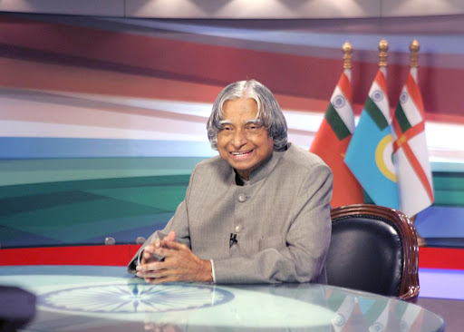

MISSILE MAN OF INDIA
A.P.J.Abdul Kalam
1931-2015

Avul Pakir Jainulabdeen Abdul Kalam (15 October 1931 – 27 July 2015) was an Indian aerospace scientist and statesman who served as the president of India from 2002 to 2007.
Born and raised in a Muslim family in Rameswaram, Tamil Nadu
Kalam studied physics and aerospace engineering. He spent the next four decades as a scientist and science administrator, mainly at the Defence Research and Development Organisation (DRDO) and Indian Space Research Organisation (ISRO) and was intimately involved in India's civilian space programme and military missile development efforts. He was known as the "Missile Man of India"